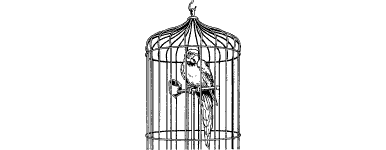

170
The secret passage is festooned with cobwebs and shows little sign of having been used for many decades. It twists and turns for several hundred yards before ending at a blank wall of crumbling plaster. Closer inspection reveals another panel, one that is controlled by a lever set into the web-strewn ceiling.
You pull this lever and the panel squeaks open to reveal a sumptuous chamber hung with rich and colourful tapestries. Incense smoulders in silver bowls and the perfumed air is filled with the chirping sounds of exotic caged birds.
{kind=link}

Cautiously you enter this luxurious room and see that it is one of several antechambers which adjoin a larger hall. Seated upon a padded chair in the middle of this hall is a young dark-haired woman who is dressed in flowing white silks. Her head is bowed and she appears to be upset. She is sobbing quietly.
If you have ever visited the city of Barrakeesh in a previous Lone Wolf New Order adventure, turn to 39.
If you have not, turn to 253.